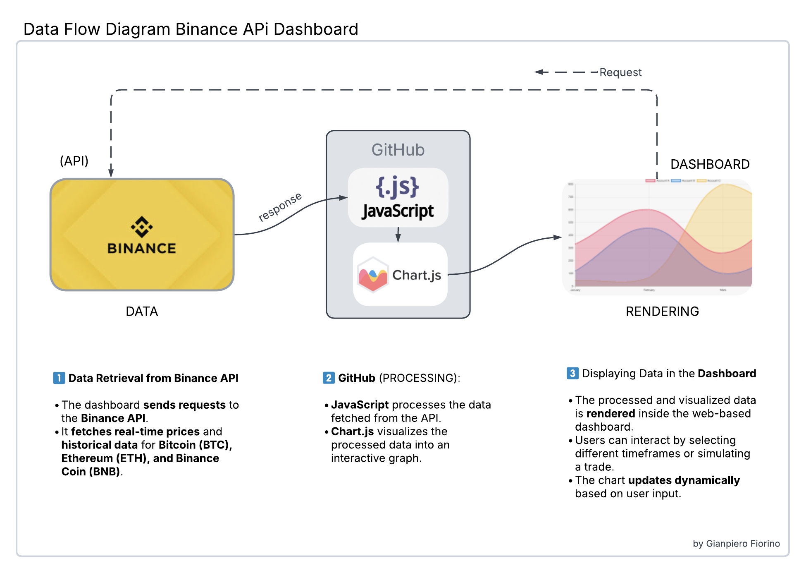
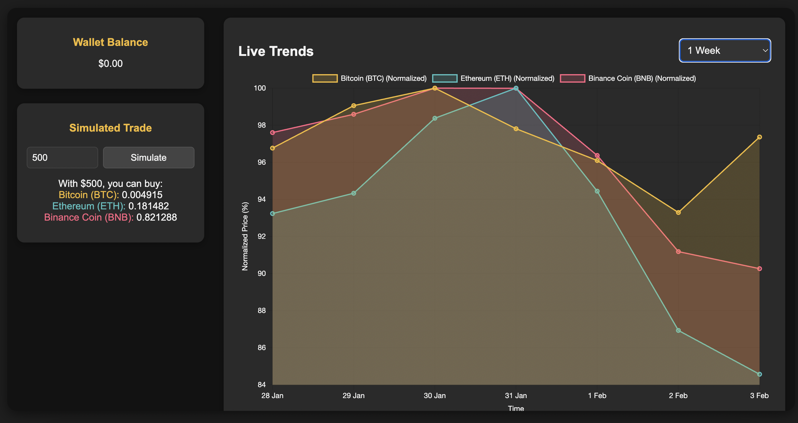

Binance API Dashboard Documentation
Overview
The Binance API Dashboard is a dynamic web application that enables cryptocurrency enthusiasts and traders to monitor live trends and simulate cryptocurrency trades. Powered by the Binance API and enhanced with a user-friendly interface, the dashboard provides valuable insights into the price movements of Bitcoin (BTC), Ethereum (ETH), and Binance Coin (BNB).
Features
- Live Cryptocurrency Trends: Real-time price updates and historical trends displayed in a visually appealing chart.
- Simulated Trade: Enter an investment amount to calculate how much of each cryptocurrency you could purchase.
- Interactive Interface: Easy-to-use dropdowns for selecting timeframes, with seamless navigation between pages.
Setup and Installation
Follow these steps to set up the Binance API Dashboard locally:
- Clone the repository:
git clone https://github.com/yourusername/Binance-API-Dashboard.git - Navigate to the project folder:
cd Binance-API-Dashboard - Open the
index.htmlfile in your web browser.
How It Works
1. Real-Time Price Updates
The dashboard fetches live prices for Bitcoin, Ethereum, and Binance Coin from the Binance API. Historical data is retrieved for the selected timeframe (e.g., 24 hours, 1 week, 1 month) and displayed on an interactive chart using Chart.js.
2. Simulated Trade
Enter an investment amount in the "Simulated Trade" section. The dashboard calculates the number of coins you could purchase based on the latest market prices, using data fetched from the Binance API.
Technology Stack
- Frontend: HTML, CSS, JavaScript
- Charting Library: Chart.js
- Data Source: Binance API
- Styling: Custom CSS with responsive design